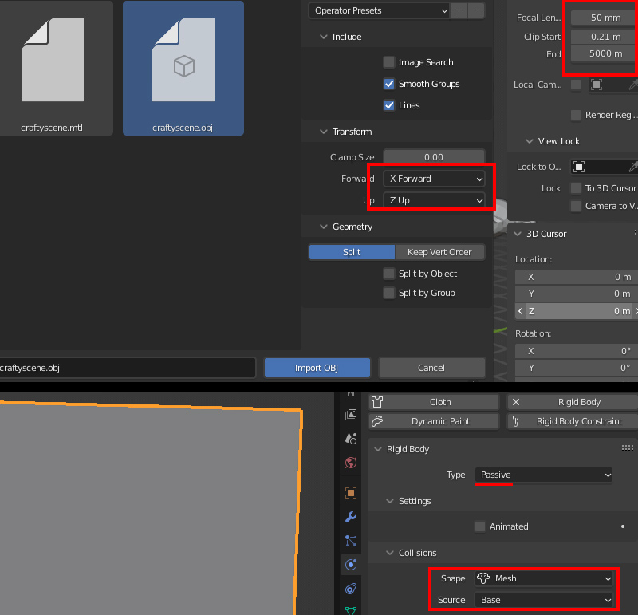

Baked Physics Method

Baked Physics in Blender
Baking physics animation in blender and getting it into SMD is tricky due to the technical issue with loose meshes without armatures not being able to be exported with BlenderSourceTools since they all need bones assigned. I have come up with a workaround method that uses a plugin to automatically assign bones to loose mesh objects so you can do SMD exportable animations. If you havent already it is reccomended to see the MDL export guide & the Blender Export guide.
Get this plugin here and install:
Physics to Bones by parrygod1. For simulated things that already have armatures/bones you can just bake the keys as normal with Object>Rigidbody>Bake to keyframes.
When working in Blender the default grid is rather small for GoldSrc scale, so for a physics scene I highly reccomend you set your Display properties lines to 16, Scale to 32, and Subdivisions to 4. For reference the HL1 scientist fits in a box of roughly dimensions: XYZ[27,13,69,].
Now a thing to note is that GoldSrc scale may be rather large for blenders physics simulaton and might make things go slower than intended as if they were more massive or like they were in space. In this case you may want either increase the simulation timescale, the gravity or to scale things down, then scale back up on compile with QC command $scale. Lastly I reccomend using collections so you can easily select all active and passive objects.
1) Have a collection of meshes ready for your scene. In my case I have a brickwall cutout and a bunch of bricks that fit in the space of this cutout.
2) Make sure all your loose bricks have thier origins in their mesh centers. For this simulation I want these bricks to be blown out and for that im using a "Suzanne" monkey mesh object to do that but will only be used for the simulation and not the final model. You can also use forces and other methods to do this, but I found this a very fast and effective method.
5) Go to Object>Rigid Body menu and click the "Add Passive" button. Passive means the wall will act as an immovable but object that other objects can collide with. By default blender sets the collision shape to "mesh". If you need to, there is more options for physics in the physics tab to the right which includes things like mesh shape, friction, ect. Do the same with a piece of ground mesh at grid level.
6) Select all your loose brick objects and set them as "Active" with the "Add active" button in Object>Rigid Body menu. This means that the object is a free moving similated object. Go to the physics tab and with an active brick selected "Enable Deactivation" & "Start Deactivated", and change any other settings like mass or shape if needed.
The reason why we use "deactivation" is so the bricks stay put until the collider object comes in contact; this prevents the wall from possibly crumbling or jittering before the collider object has hit. Then press "Copy From Active" which will copy the selected brick paramaters to all the rest. Verify the settings by deselecting all and click on a random brick to see if it sucessfuly copied the settings.
7) Select your collider object and set it to "Active", but then in the physics panel check "Animated". This means the object can interact with Active physics objects but is moved by keyframes. Animated active objects also can pass through Static objects. This will mean we will animate this to push the bricks out of the wall.
8) In your timeline make a quick movement animation. Personally I turned on "Auto Key" and moved the object forward through the wall and when keyframes were set I turned off Autokey. You can do this manually too.
9) When all is good press play and watch how it simulates. Depending on how complex and how your computer specs are this may lag or go slow. If the scene is not to your liking go back to starting frame and then go back and make any changes. If your timeline does not accomodate the whole simulation length open the "time configuration" tab and increase the length/framecount of the scene.
If your physics simulation has very jittery or innacurate movements, or objects clipping through the floor you can attempt to increase the "Solver Substeps" in the Scene Physics option panel. The final thing to do is play with the "Speed". Ive found setting speed higher produces some better results than increasing gravity as mesh size and scale behave very differently. It also has the added bonus of making less frames out of a complex simulation that may go beyond 100frames/upwards of 100objects*.
More info on Physics found on the Blender manual site.
10) When you are satisfied with the result, save a copy of your scene first before you run the physics to bones and bake in case something messes up and you can revert.
11) Select your collection in the outlier so its active. Move the timeline playhead to the beginning, select all the bricks and outerwall and check the number of meshes selected. If under 127 meshes then, Go to Object >Quick Effects>Physics to bone. Uncheck "Create Backup", check "Selected Objects Only", check "Merge Objects" and lastly "Bake Animations". Set your animation length settings and press OK. This will now bake the animation, auto-create an armature that assigns bones to each loose part and finally merges the loose parts into one mesh.
If over 127 meshes, then do the same as above with "Merge Objects" unchecked. Then select half of the objects and merge them then do the other half. During the exporting phase you will export these as two different SMDs.
12) You can now see the result of the plugin, the bones are now on the model. The model is ready for export; go into the scene tab and in the BST export section "supress" the group, then set your export path, click the mesh in the export list and uncheck "implicit motionless bone", do the same for the Action. Now you can export the Sequence and the Action SMD.
You can continue to compiling and map setup below, but I will also beyond this show a map-collision method as well:
Continue to Compiling and Map setup
Map collision method
Now if you want your physics simulation to collide directly with your map geometry you absolutley can, this just requires a few additional steps.
1) Obtain "Crafty" which is a useful GoldSrc multi-tool which includes a BSP viewer that allows for BSP to OBJ. Make a copy of your map and isolate the area where your physics animation will be. Note that you will have to make sure your map compiles (no leaks). Compile your map to a BSP and you can omit "Run VIS" & "Run LIGHT" since we are just needing geometry, also check "do not run map on compile".
2) When the map is successfuly compiled open up the BSP with Crafty. With crafty BSP viewer open, go to file Export>OBJ.

3) Import the OBJ into Blender with Forward as "X Forward" Up as "Z up" and uncheck "image search". When imported I reccomend setting the "View Clip" plane end to something higher like 5000. If you get some wierd looking edges when panning your camera try slightly increasing the clip start. There is an optional setting for Geometry splits which will import the OBJ into several different meshes, its up to you whether to do this.
Once imported set the object to "passive" physics mode and "geometry" under the physics collisions tab. Then set "base" as the source.

4)Select the outer faces in object mode and then press "hide" to reveal the map geometry. You can alternatley delete or separate the meshes.
5)For this scene I made a stack of tire objects and set it up in the similar way as before where I parent the rest of the bones to an root bone. Again, I am using an Active animated Suzanne mesh to smash the tires in a similar way to the brickscene.
A thing to note about large physics sims like this is that GoldSrc models are lit from their origin point which means they may be affected by pointing a flashlight on that spot. In this demonstration I have the rootbone on the ground at 0 0 0 but you can put it on another ground or platform elsewhere. Also if you have difficulty moving the origin point without drastically changing the lighting of the model you can use zhlt_copylight x. "x" being name of target to copy light from. More info here.
6) Bake your keyframes as before with the same methods as the brickscene. You can now proceed to compiling and map setup. Also below is info on fixing issues that may happen with the compile error. In this case I only had 32 tires so I was fine with a sequence over 120frames.
Continue to Compiling and Map setup
if your animation is longer than 100 frames with upwards of 100 objects, there is a compile error that can happen with complex animations called "sequence "action" is greater than 64K". If you get this error, There is two ways to fix:
First method is using "time streaching" in the Output Properties which is a simple change in your scene settings to change your final frames. For example: 120frames (default @30fps) compress to 60 frames, therefore QC set to 15fps (note time remapping cannot be used if you are using BST to export.)

Second method, by making the simulation faster and changing the final QC FPS (only issue is first way its harder to determine final FPS. where as the second method is simple math for example: 120frames @30fps compress to 60 frames, therefore QC set to 15fps).
Whatever you go with depending on your animation sometimes having less frames gives a slightly more smooth motion due to more interpolating. Anything below 12fps noticibly loses precision.